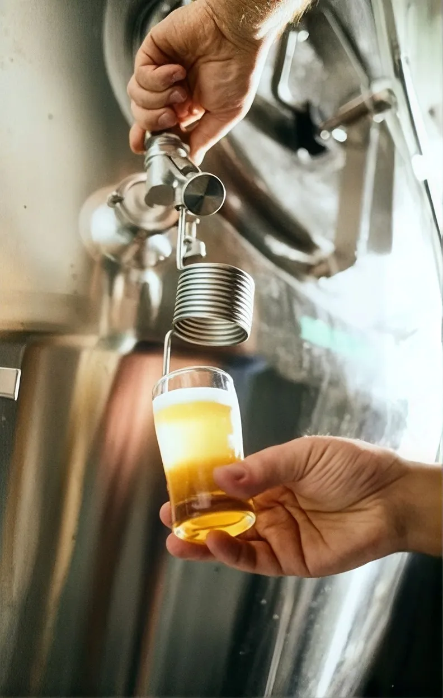

A Zymos acompanha a temperatura de cada tanque dia e noite, dando visibilidade total no seu dashboard sobre qualquer oscilação antes que ela estrague o lote ou altere o sabor da cerveja — sem precisar mexer nos seus equipamentos ou na refrigeração.
Na fermentação, qualquer grau fora do planejado pode gerar sabores indesejados (off-flavors), travar o trabalho da levedura ou jogar dias de produção fora. Sem monitoramento contínuo, oscilações térmicas passam despercebidas por horas e colocam o lote em risco.
+1.8°C no pico de Fermentação
Alteração do Sabor & Aroma
Gestão Térmica Preventiva

Fundamentos Técnicos
Fornecemos dados verdadeiros e com impacto real para sua indústria.
Proteção contínua da integridade do perfil da sua marca e cerveja.
Proteção da identidade da marca através do monitoramento de cada tanque.
Tecnologia desenvolvida especificamente para a realidade de brassagem e adegas industriais brasileiras.
Monitoramento térmico 24/7 no computador, com visibilidade de desvios direto no dashboard.
Registros completos por lote e tanque, sempre prontos para auditorias e auditoria de qualidade.
Padronização do processo a cada lote, preservando a identidade da marca e a fidelidade dos clientes.
Conformidade automática com a Lei do Autocontrole (Lei nº 14.515/2022) e normas do setor.